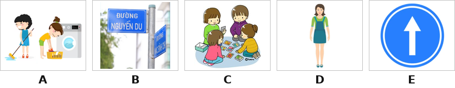
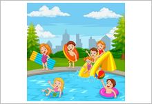
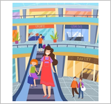
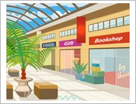
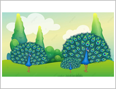

My name is Lisa. I am tall and (0) slim. This is my father, Tony. He works in a (1) ______. This is my mother, Daisy. She has a (2) ______. She works in a school as a Maths teacher. My mother often goes to the (3) ______ on Mondays. Today, my parents will take me to the campsite in the mountain. My class is playing (4) ______ at the campsite. I am very happy.
Today is Sunday. It is sunny and warm. Thuy Duong likes reading (0) books. She wants to go to the (1) ______. It is in Chu Van An Street. How can she get there? She can go (2) ______ and turn right. The library is on the (3) ______.
Thang: Hello, I am Thang. Today is Saturday. It is sunny and hot. Because I like swimming, my family goes to the water park. I can swim and play there.

Dao: Hi there! I’m Dao. It is windy outside. My mother and I go to the shopping centre because my mother wants to buy clothes for winter. There is a bakery in the shopping centre. We can go there to have some cakes as well.



Nhập thông tin để hệ thống ghi nhận kết quả.
Bạn có thêm 5 phút để hoàn tất. Hết 5 phút bài sẽ tự động nộp.
Hành vi này đã được ghi nhận. Hãy quay lại chế độ toàn màn hình để tiếp tục làm bài.